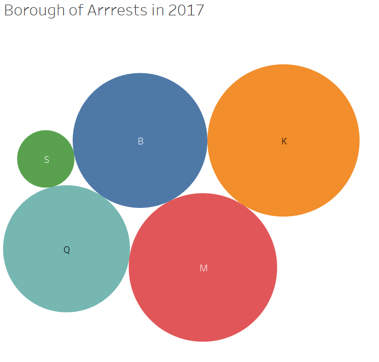

New York City Police Department has maintained an extensive record of arrests made. The dataset is available in (NYPD, 2018). A few aspects of the data analysis have been presented below.
Data Cleaning:
Following variables from the dataset have been used with caution:
Perp_Sex: Chose only Male and Female values avoiding ambiguous values.
Number of Records: By choosing only relevant variable values, any discrepancies were avoided.
Ofns_Desc: The flaws were avoided by selecting count of records above 10K for the whole dataset.
Arrest_Boro: Did not contain incorrect values.
Age_Group: Only three age groups with significant presence (more than 90%) in the data were chosen. In a record, a 5ft man had an age of 1 reported in the dataset.
Arrest_Date: Did not contain invalid values.
The above chart shows statistics of males and females arrested for the entire dataset. Less than 40% of the arrests involved female perpetrators.
The top 3 offences are Dangerous Drugs, Assault and Thefts. Each of these three categories involved more than 100,000 males and less than 50,000 females.
The above diagram shows quarterly trend of arrests for the entire period. The arrests have been split into age-wise groups. The highest number of arrests are made in the age group of 25 to 44. Almost 50% less are in the age group of 18-24. Age group 45-64 shows even less arrests. People above 64 and below 18 have been arrested very rarely.
It may be observed that all the age groups have been showing a generally decreasing trend since 2015.

The last figure shows a bubble chart indicating degree of borough-wise arrests in 2017. The keys are as follows: K = Brooklyn (Kings), M = Manhattan, B = Bronx, Q = Queen’s Island and S = Staten Island. K is showing the highest number of arrests and S the least.
Reference:
NYPD (2018, January 11th). NYPD Arrests Data (Historic). Retrieved from: https://data.cityofnewyork.us/Public-Safety/NYPD-Arrests-Data-Historic-/8h9b-rp9u